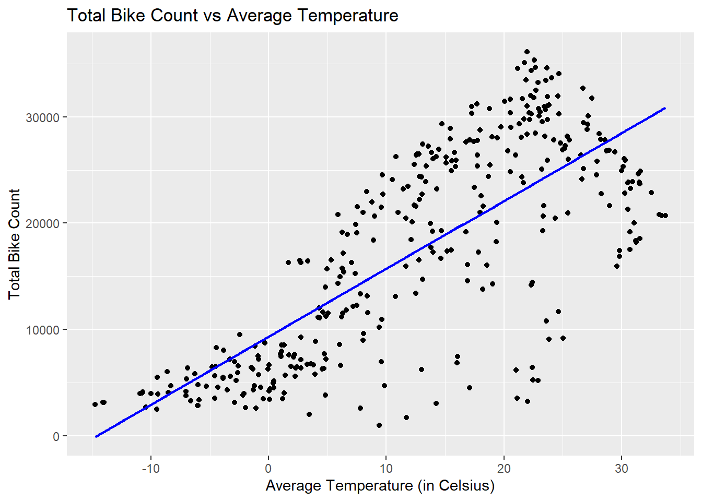
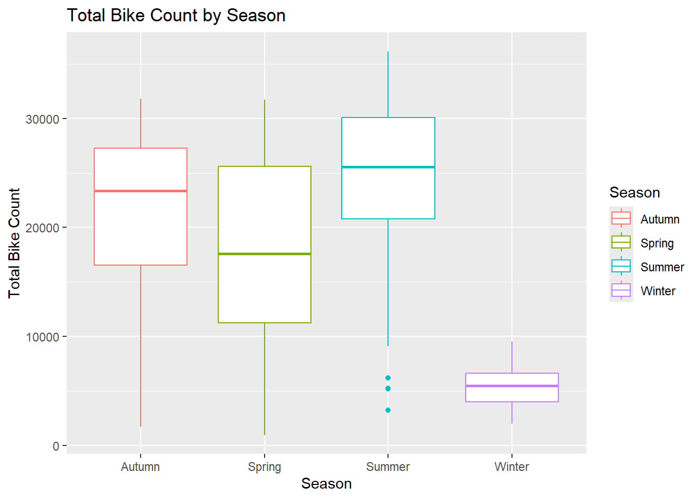
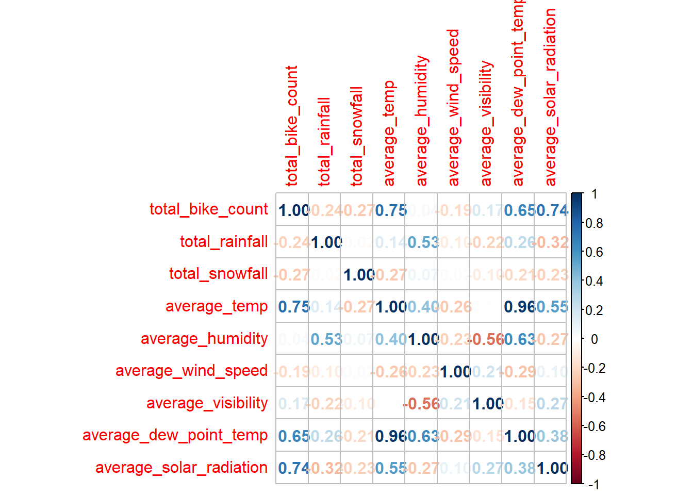

We will use a dataset from the UCI Machine Learning Repository. This data set is about bike sharing rentals and is available at the assignment link. You can learn more about the data here. The data is available at https://www4.stat.ncsu.edu/~online/datasets/SeoulBikeData.csv
The data description describes the following variables:
• Date : day/month/year
• Rented Bike count - Count of bikes rented at each hour
• Hour - Hour of the day
• Temperature-Temperature in Celsius
• Humidity - %
• Windspeed - m/s
• Visibility - 10m
• Dew point temperature - Celsius
• Solar radiation - MJ/m2
• Rainfall - mm
• Snowfall - cm
• Seasons - Winter, Spring, Summer, Autumn
• Holiday - Holiday/No holiday
• Functional Day - NoFunc(Non Functional Hours), Fun(Functional hours)
Reading Data
Before we can work with the data, we need to read it in!
library(tidyverse)
── Attaching core tidyverse packages ──────────────────────── tidyverse 2.0.0 ──
✔ dplyr 1.1.4 ✔ readr 2.1.5
✔ forcats 1.0.0 ✔ stringr 1.5.1
✔ ggplot2 3.5.1 ✔ tibble 3.2.1
✔ lubridate 1.9.3 ✔ tidyr 1.3.1
✔ purrr 1.0.2
── Conflicts ────────────────────────────────────────── tidyverse_conflicts() ──
✖ dplyr::filter() masks stats::filter()
✖ dplyr::lag() masks stats::lag()
ℹ Use the conflicted package (<http://conflicted.r-lib.org/>) to force all conflicts to become errors
Rows: 8760 Columns: 14
── Column specification ────────────────────────────────────────────────────────
Delimiter: ","
chr (4): Date, Seasons, Holiday, Functioning Day
dbl (10): Rented Bike Count, Hour, Temperature(°C), Humidity(%), Wind speed ...
ℹ Use `spec()` to retrieve the full column specification for this data.
ℹ Specify the column types or set `show_col_types = FALSE` to quiet this message.
From this output, we see that our data is not missing any data and we can proceed ahead.
2. Check the column types and the values within the columns to make sure they make sense (basic summary stats for numeric columns and check the unique values for the categorical variables).
We first can examine the unique values for the categorical variables, and see that all of the unique values for the categorical variables make sense.
We can then examine the summary stats for our numeric variables.
summary(bike_data[sapply(bike_data, is.numeric)])
Rented Bike Count Hour Temperature(°C) Humidity(%)
Min. : 0.0 Min. : 0.00 Min. :-17.80 Min. : 0.00
1st Qu.: 191.0 1st Qu.: 5.75 1st Qu.: 3.50 1st Qu.:42.00
Median : 504.5 Median :11.50 Median : 13.70 Median :57.00
Mean : 704.6 Mean :11.50 Mean : 12.88 Mean :58.23
3rd Qu.:1065.2 3rd Qu.:17.25 3rd Qu.: 22.50 3rd Qu.:74.00
Max. :3556.0 Max. :23.00 Max. : 39.40 Max. :98.00
Wind speed (m/s) Visibility (10m) Dew point temperature(°C)
Min. :0.000 Min. : 27 Min. :-30.600
1st Qu.:0.900 1st Qu.: 940 1st Qu.: -4.700
Median :1.500 Median :1698 Median : 5.100
Mean :1.725 Mean :1437 Mean : 4.074
3rd Qu.:2.300 3rd Qu.:2000 3rd Qu.: 14.800
Max. :7.400 Max. :2000 Max. : 27.200
Solar Radiation (MJ/m2) Rainfall(mm) Snowfall (cm)
Min. :0.0000 Min. : 0.0000 Min. :0.00000
1st Qu.:0.0000 1st Qu.: 0.0000 1st Qu.:0.00000
Median :0.0100 Median : 0.0000 Median :0.00000
Mean :0.5691 Mean : 0.1487 Mean :0.07507
3rd Qu.:0.9300 3rd Qu.: 0.0000 3rd Qu.:0.00000
Max. :3.5200 Max. :35.0000 Max. :8.80000
From our investigation on the summaries of the numeric variables, most of them make sense. However, we may want to investigate the Snowfall and Rainfall variables further.
3. Convert the Date column into an actual date (if need be). Recall the lubridate package.
We noticed in our unique character values investigation that the Date variable is originally in the “DD/MM/YYYY” format and thus needs to be converted to a date variable with lubridate::dmy().
5. Lastly, rename the all the variables to have easy to use names (I use lower snake case but whatever you’d like is fine)
We notice that some variables have spaces and their units attached to them, so for ease of use we can rename them.
bike_data <- bike_data |>rename("date"="Date","bike_count"="Rented Bike Count","hour"="Hour","temperature"="Temperature(°C)","humidity"="Humidity(%)","wind_speed"="Wind speed (m/s)","visibility"="Visibility (10m)","dew_point_temp"="Dew point temperature(°C)","solar_radiation"="Solar Radiation (MJ/m2)","rainfall"="Rainfall(mm)" ,"snowfall"="Snowfall (cm)","seasons"="Seasons","holiday"="Holiday","functioning_day"="Functioning Day")
6. Create summary statistics (especially related to the bike rental count). These should be done across your categorical variables as well. You should notice something about the Functioning Day variable. Subset the data appropriately based on that.
We first want to create some summary statistics across our categorical variables.
Here we notice something strange with our Functioning Day categorical variable for the No level, all of the numerical summaries are zero across this level. So we can subset our data to only include Functioning Day where the level is Yes.
`summarise()` has grouped output by 'date', 'seasons'. You can override using
the `.groups` argument.
daily_data
# A tibble: 353 × 12
# Groups: date, seasons [353]
date seasons holiday total_bike_count total_rainfall total_snowfall
<date> <fct> <fct> <dbl> <dbl> <dbl>
1 2017-12-01 Winter No Holiday 9539 0 0
2 2017-12-02 Winter No Holiday 8523 0 0
3 2017-12-03 Winter No Holiday 7222 4 0
4 2017-12-04 Winter No Holiday 8729 0.1 0
5 2017-12-05 Winter No Holiday 8307 0 0
6 2017-12-06 Winter No Holiday 6669 1.3 8.6
7 2017-12-07 Winter No Holiday 8549 0 10.4
8 2017-12-08 Winter No Holiday 8032 0 0
9 2017-12-09 Winter No Holiday 7233 0 0
10 2017-12-10 Winter No Holiday 3453 4.1 32.5
# ℹ 343 more rows
# ℹ 6 more variables: average_temp <dbl>, average_humidity <dbl>,
# average_wind_speed <dbl>, average_visibility <dbl>,
# average_dew_point_temp <dbl>, average_solar_radiation <dbl>
8. Recreate your basic summary stats and then create some plots to explore relationships. Report correlation between your numeric variables as well.
We first need to recreate our basic summary stats.
summary(daily_data)
date seasons holiday total_bike_count
Min. :2017-12-01 Autumn:81 Holiday : 17 Min. : 977
1st Qu.:2018-02-27 Spring:90 No Holiday:336 1st Qu.: 6967
Median :2018-05-28 Summer:92 Median :18563
Mean :2018-05-28 Winter:90 Mean :17485
3rd Qu.:2018-08-24 3rd Qu.:26285
Max. :2018-11-30 Max. :36149
total_rainfall total_snowfall average_temp average_humidity
Min. : 0.000 Min. : 0.000 Min. :-14.738 Min. :22.25
1st Qu.: 0.000 1st Qu.: 0.000 1st Qu.: 3.304 1st Qu.:47.58
Median : 0.000 Median : 0.000 Median : 13.738 Median :57.17
Mean : 3.576 Mean : 1.863 Mean : 12.776 Mean :58.17
3rd Qu.: 0.500 3rd Qu.: 0.000 3rd Qu.: 22.592 3rd Qu.:67.71
Max. :95.500 Max. :78.700 Max. : 33.742 Max. :95.88
average_wind_speed average_visibility average_dew_point_temp
Min. :0.6625 Min. : 214.3 Min. :-27.750
1st Qu.:1.3042 1st Qu.:1087.0 1st Qu.: -5.188
Median :1.6583 Median :1557.8 Median : 4.612
Mean :1.7261 Mean :1434.0 Mean : 3.954
3rd Qu.:1.9542 3rd Qu.:1874.3 3rd Qu.: 14.921
Max. :4.0000 Max. :2000.0 Max. : 25.038
average_solar_radiation
Min. :0.02917
1st Qu.:0.28333
Median :0.56500
Mean :0.56773
3rd Qu.:0.82000
Max. :1.21667
We can then create some plots to explore the relationships in our daily data.
We first can examine a scatterplot between the total bike count per day and the average temperture for that day.
library(ggplot2)scatter <-ggplot(daily_data, aes(x = average_temp, y = total_bike_count)) +geom_point() +geom_smooth(method ="lm", se =FALSE, color ="blue") +labs(title ="Total Bike Count vs Average Temperature",x ="Average Temperature (in Celsius)",y ="Total Bike Count")scatter
`geom_smooth()` using formula = 'y ~ x'

We notice that there appears to be a positive relationship between total bike count and the average temperature, which is to be expected considering people would likely be more inclined to rent a bike to ride in warmer weather.
We can also examine the box plots for total bike count based on the season.
boxplot <-ggplot(daily_data, aes(x = seasons, y = total_bike_count, color = seasons)) +geom_boxplot() +labs(title ="Total Bike Count by Season",x ="Season",y ="Total Bike Count") +scale_color_discrete("Season")boxplot

Again through this boxplot we see a similar trend as in our scatterplot, where less people rent a bike in the colder weather (i.e. winter season).
We can also examine the correlation between our numeric variables in the form of a correlation matrix.
library(corrplot)
Warning: package 'corrplot' was built under R version 4.3.3
numeric_vars <- numeric_vars |>select(-date, -seasons)# Calculate the correlation matrixcor_matrix <-cor(numeric_vars, use ="complete.obs")corrplot(cor_matrix, method ="number")

From our correlation plot we can confirm that there is a positive linear relationship between the total bike count and the average temperature.
Split the Data
Use functions from tidymodels to split the data into a training and test set (75/25 split). Use the strata argument to stratify the split on the seasons variable
• Let’s ignore the date variable for modeling (so we’ll need to remove that or give it a different ID) but use it to create a weekday/weekend (factor) variable. (See step 2 of the shinymodels tutorial! You can use step_date() then step_mutate() with a factor(if_else(…)) to create the variable. I then had to remove the intermediate variable created.)
• Let’s standardize the numeric variables since their scales are pretty different.
• Let’s create dummy variables for the seasons, holiday, and our new day type variable
• Add in interactions between seasons and holiday, seasons and temp, temp and rainfall. For the seasons interactions, you can use starts_with() to create the proper interactions.
→ A | warning: prediction from rank-deficient fit; consider predict(., rankdeficient="NA")
There were issues with some computations A: x7
There were issues with some computations A: x10
daily_CV_fits_3 |>collect_metrics()
# A tibble: 2 × 6
.metric .estimator mean n std_err .config
<chr> <chr> <dbl> <int> <dbl> <chr>
1 rmse standard 3073. 10 240. Preprocessor1_Model1
2 rsq standard 0.905 10 0.0157 Preprocessor1_Model1
Now that we fit all three models, we can compare the CV error on the training set and see that our third model with the quadratic term has the lowest CV error.
Using your ‘best’ model, fit the model to the entire training data set (use the last_fit() function).